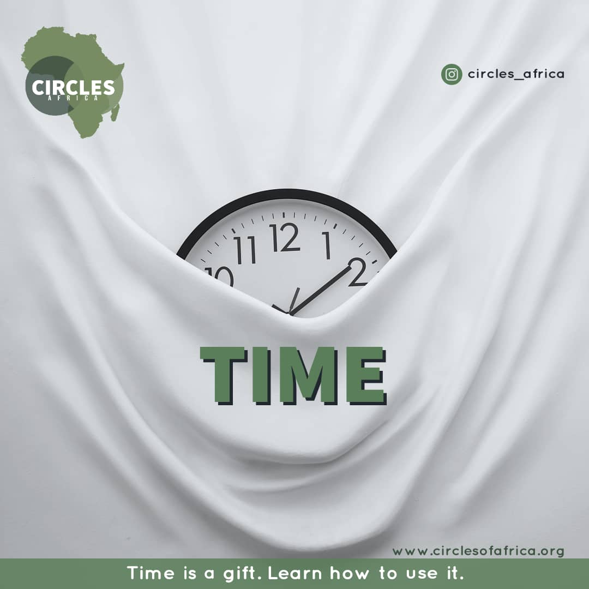
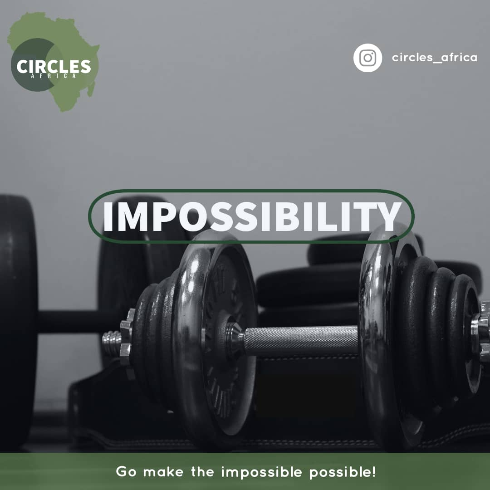
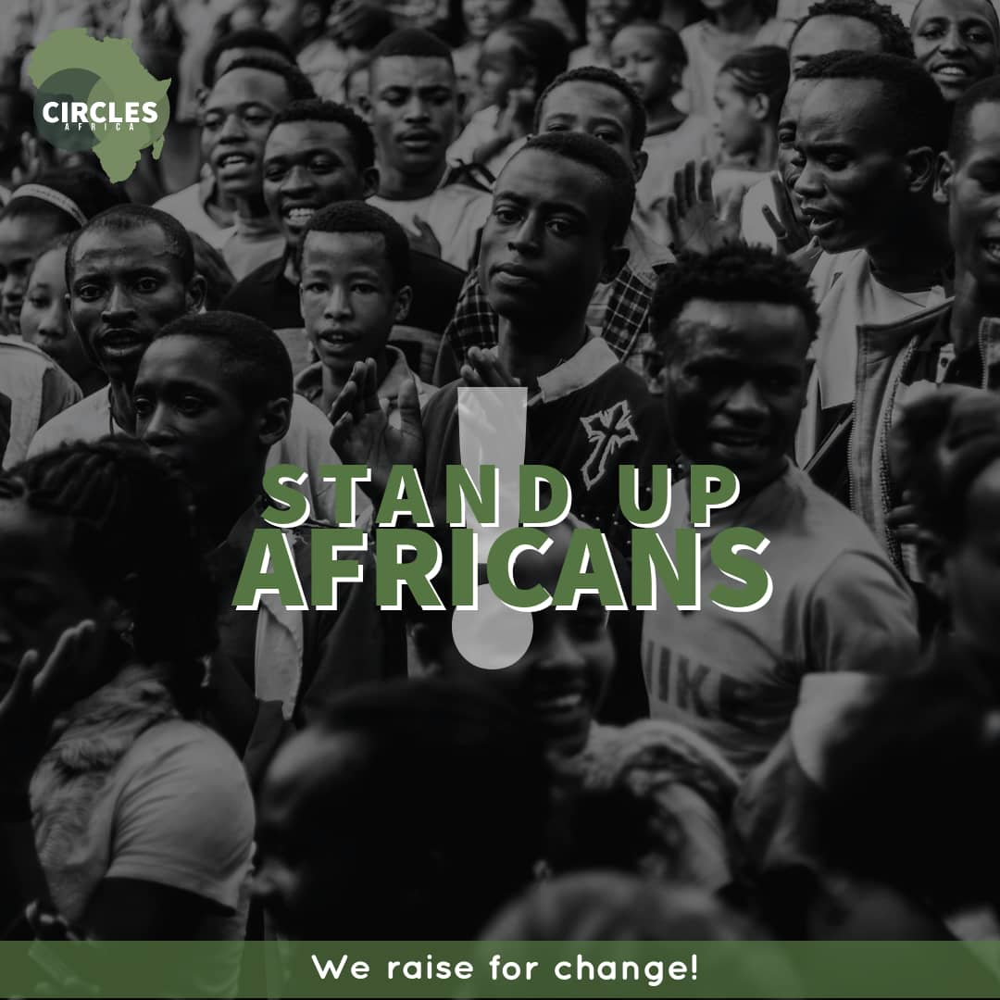

Together we can. Giving back through life changing experiences
Get Started
This is a homeschool project organized for kids that don't have access to eLearning platforms. This projects run for three days base on the fact that they resuming the 20th of September, 2020.
These kids were taught effectively with the introduction of computers. Which they were shown how to use the computer.
We found out that ICT is now a major aspect of the world. Base on that fact we choose to a whole day to train them on some basis of the computer.
From the interview we conducted after the conclusion of the project. The kids wanted us to continue with them because they were taught things beyond their school walls. But due to the fact that they are resuming and limited resources to continue the project for the kids base on their request, we choose to conclude the project for three days.
Do you love what you see?
Click the button below to donate👇🏾.
Donate Now
If you want to donate materially, you can contact us via Instagram.com/circles_africa and also via our email: circlesafrica@gmail.com.
Ojeyinka Iyanuoluwa Timothy
Who I am
My name is Ojeyinka Iyanuoluwa Timothy.
I hail from Ipetumodu in Osun state, I also had my Early year of schooling at Ibadan, Oyo state.
I am presently undergoing my Bachelor of Technology in Remote sensing and Geoinformation system at the Federal University of Technology, Akure (FUTA).
I am reserved in nature and I love to read books ranging from motivational to business, and the Bible.
I am presently building a career in becoming a Public Speaker alongside my passion about impacting lives.
My main purpose is to help young people understand who they really are and to identify their uniqueness.
Circles of Africa was birthed out of my passion and I believe that together we can raise a great future for the African Continent.
Join me in shaping Africa and the world at large.